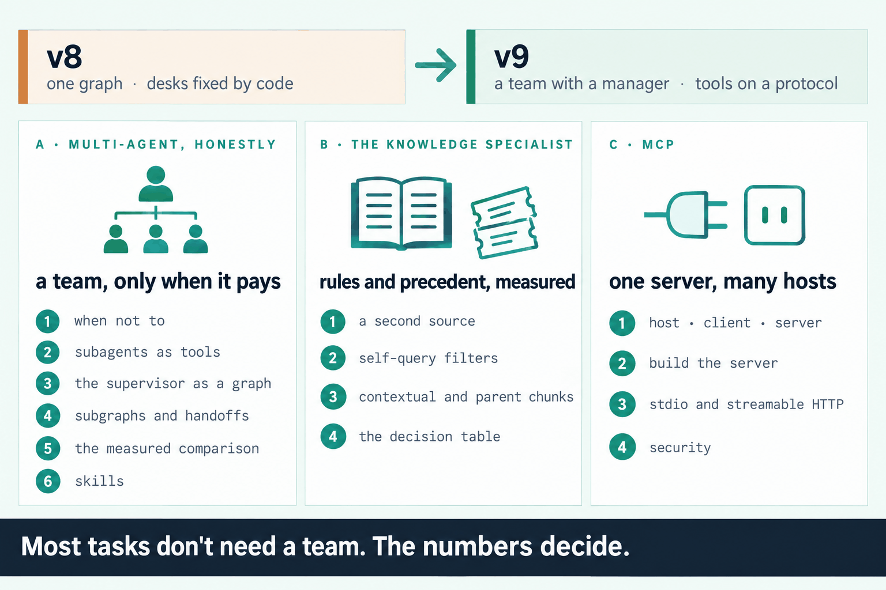
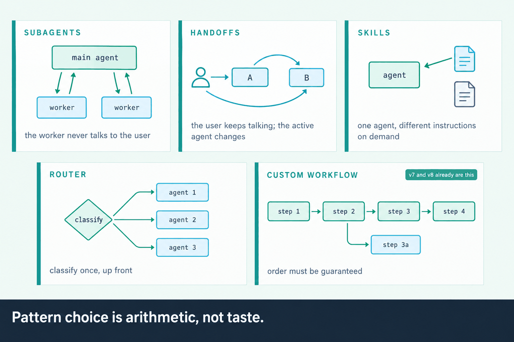
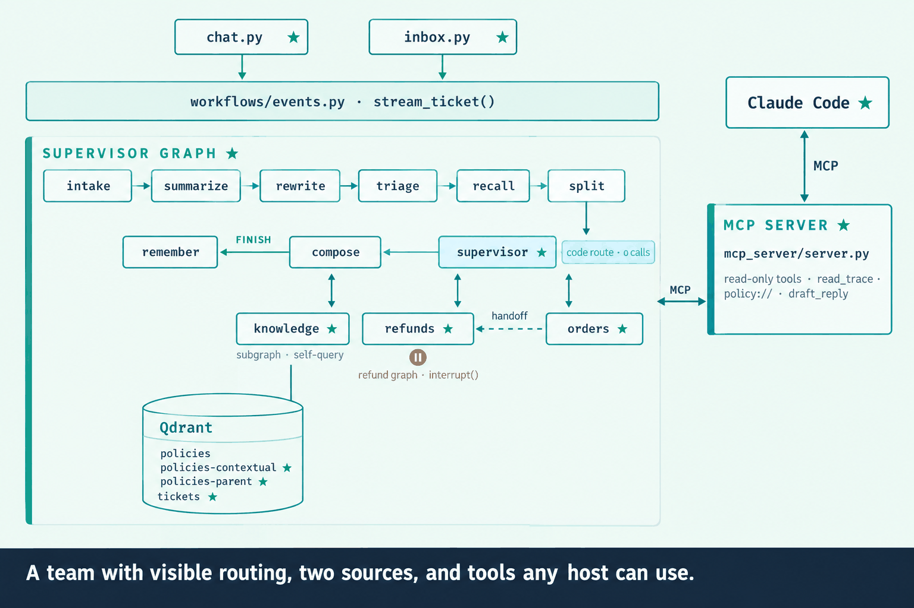

Command(goto=), a hop cap, and route_log as visible state; specialists as subgraphs; a handoff with a summary.
session-12-multiagent.ipynb.config.py moves into core/, beside constants.py and exceptions.py (section 22)Answers on OpenRouter, embeddings on Gemini, as before. The heaviest notebook of the course: about 550 calls, mostly in the two measured comparisons.
| The situation | What you'll be able to do | Notebook section |
|---|---|---|
| “Should we make this multi-agent?” | Name the three real reasons, pick a pattern by arithmetic, and measure it against what you have. | 4, 9 |
| “Why did the bot send this ticket there?” | Keep routing in state, capped and readable in every trace. | 6 |
| “Has this happened to other customers?” | Answer from past tickets as precedent, never as a rule, with no customer's identity in the index. | 12 |
| “It answers wearables with the audio clause.” | Read the filters a question implies, and fall back to none when unsure. | 13 |
| “Should we add contextual retrieval?” | Build it as its own collection and keep it only if the scorecard moves. | 14, 16 |
| “Ops want to check orders from Claude.” | Serve the tools over MCP, read-only, and register them in one command. | MCP 4–6 |
| “Can we connect this popular MCP server?” | Read its descriptions first, and refuse the lethal trifecta. | MCP 7 |
| Pattern | Use it when | ShopWise |
|---|---|---|
| Subagents | the worker never talks to the user | the team as one agent (section 5) |
| Handoffs | the user keeps talking; who they talk to changes | orders → refunds (section 8) |
| Skills | one agent needs different instructions, not tools | load_skill (section 10) |
| Router | you can classify up front | the code route, kept (section 6) |
| Custom workflow | order must be guaranteed | v7 and v8 already are one |


uv sync once: tonight adds mcp, langchain-mcp-adapters, ddgs, langchain-tavilyuv run python kb/ingest.py builds the policies and the past ticketsgpt-oss-20b, well under a dollarsession-12-multiagent.ipynb — one overloaded employee, one missing source. The closed door opens session-12-mcp.ipynb.